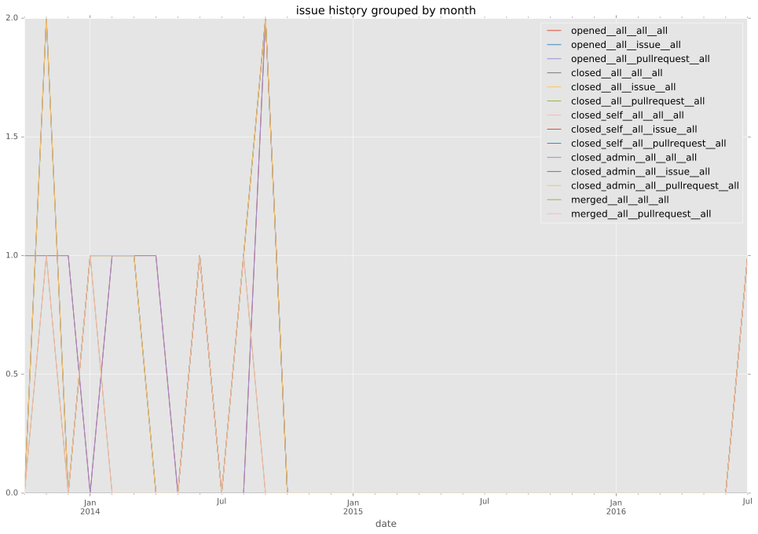
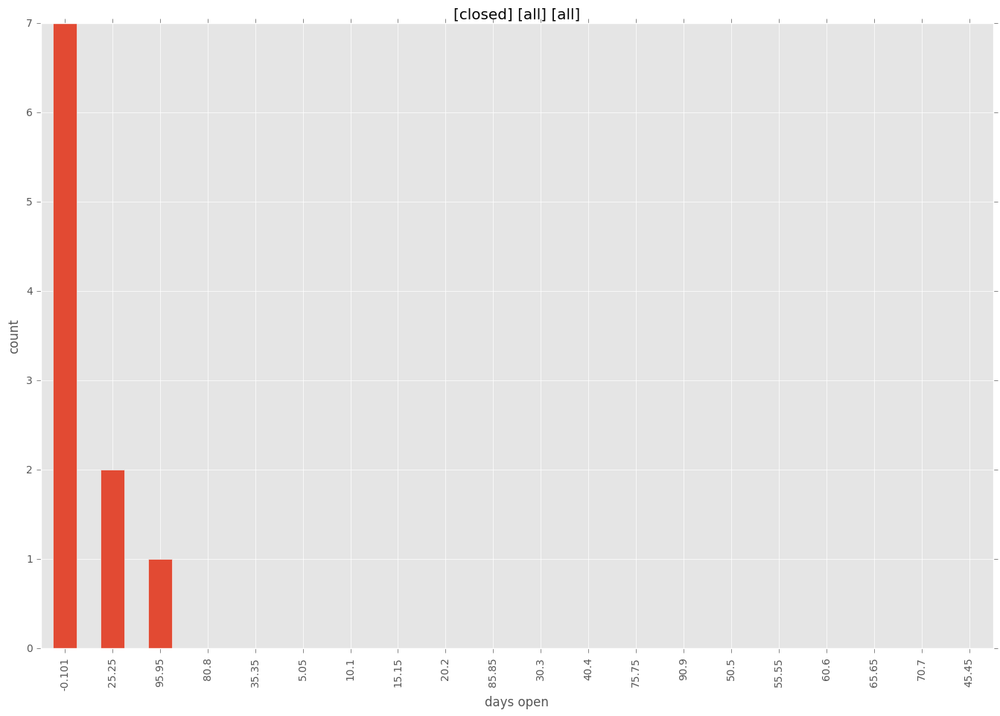
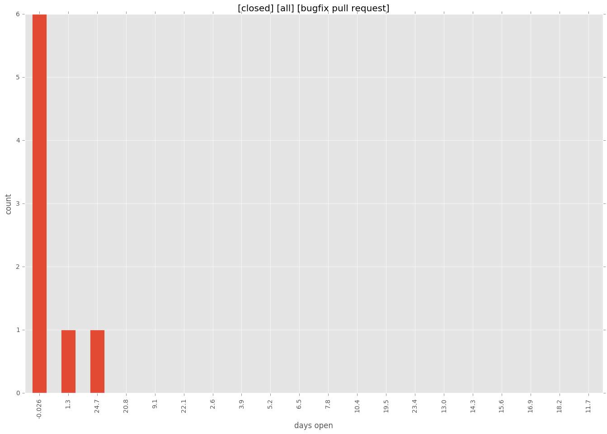
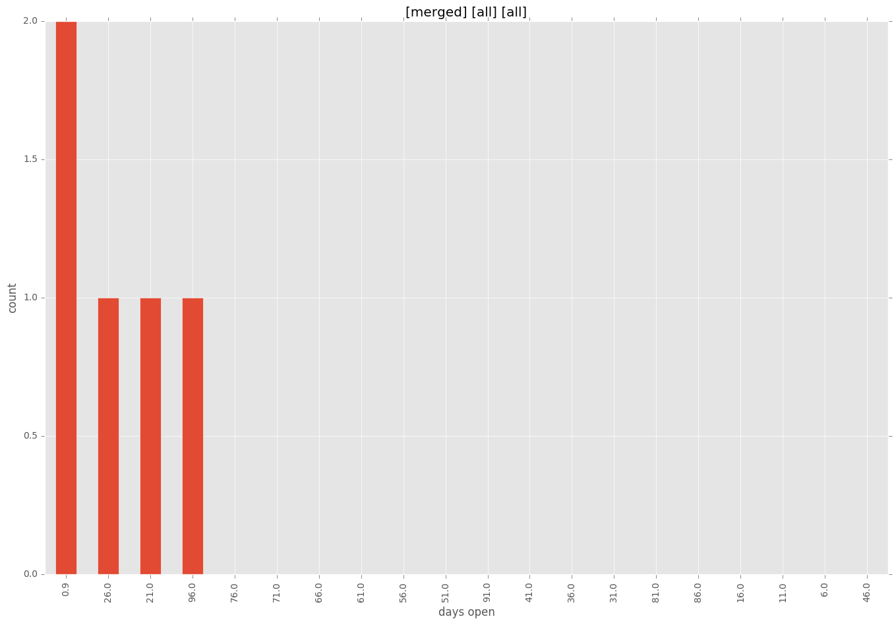
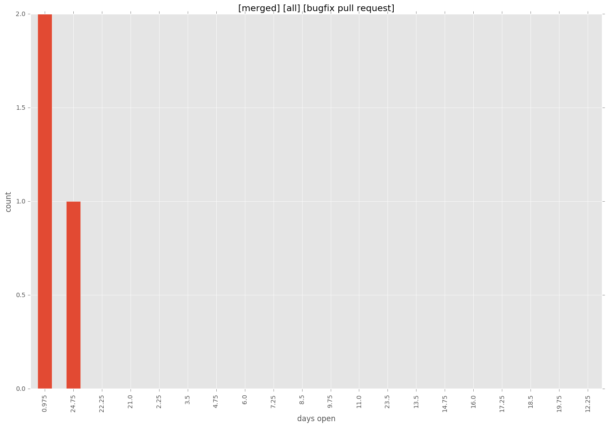
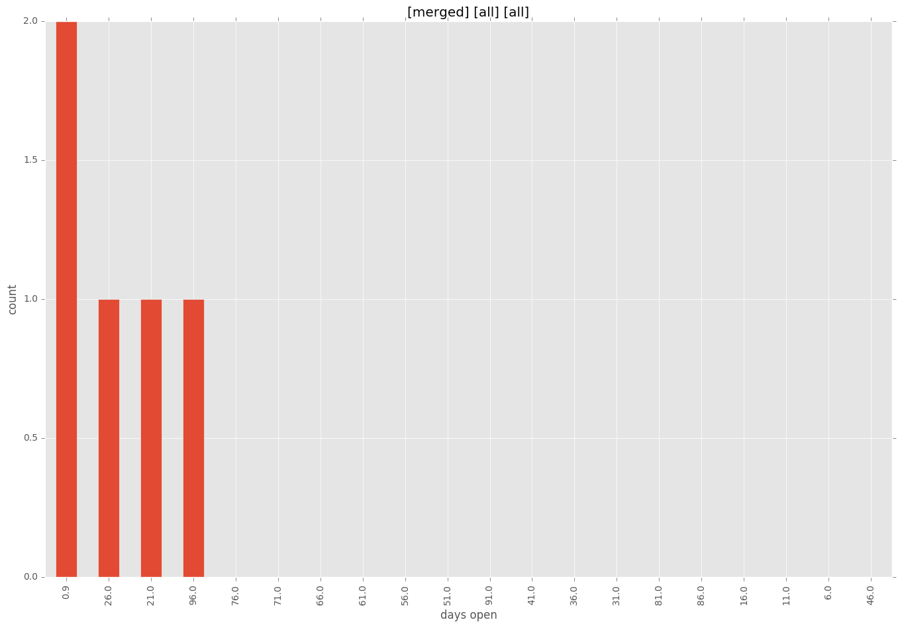
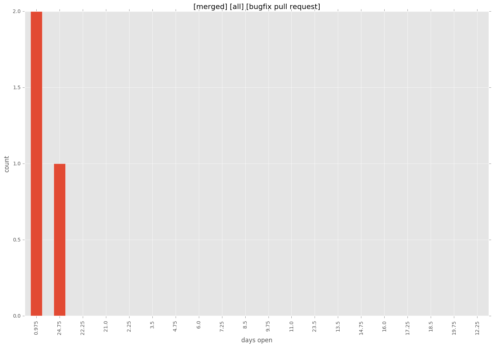

total issue counts
bugfix pull request: 8
feature pull request: 1
pullrequest: 10
docs pull request: 1
issue history

days open by issue type
bugfix pull request
count: 11
std: 10.2300804227
min: 0
max: 26
median: 1.0
mean: 5.36363636364
feature pull request
count: 2
std: 0.0
min: 30
max: 30
median: 30.0
mean: 30.0
all
count: 15
std: 34.5332138259
min: 0
max: 101
median: 2.0
mean: 21.4
pullrequest
count: 0
std: nan
min: nan
max: nan
median: nan
mean: nan
docs pull request
count: 2
std: 0.0
min: 101
max: 101
median: 101.0
mean: 101.0
closures grouped by total days open




 


